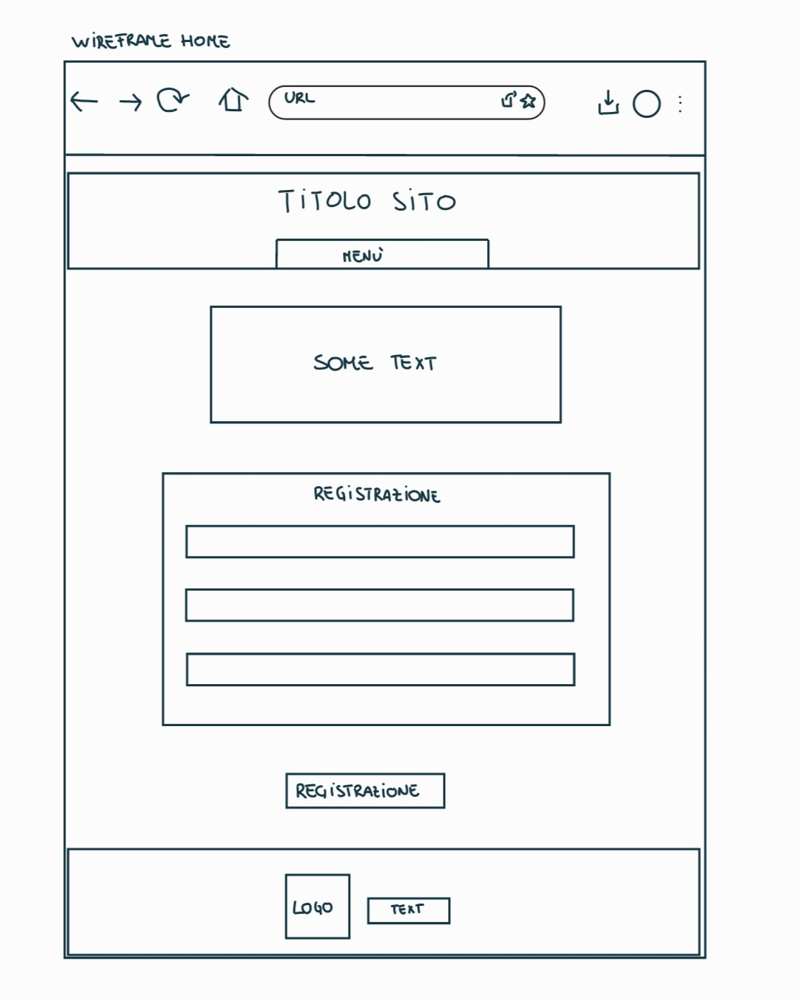
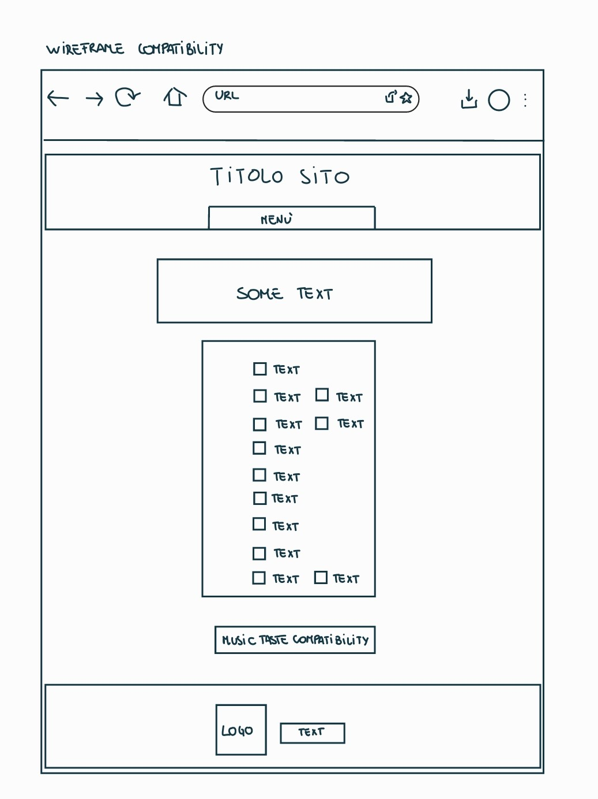
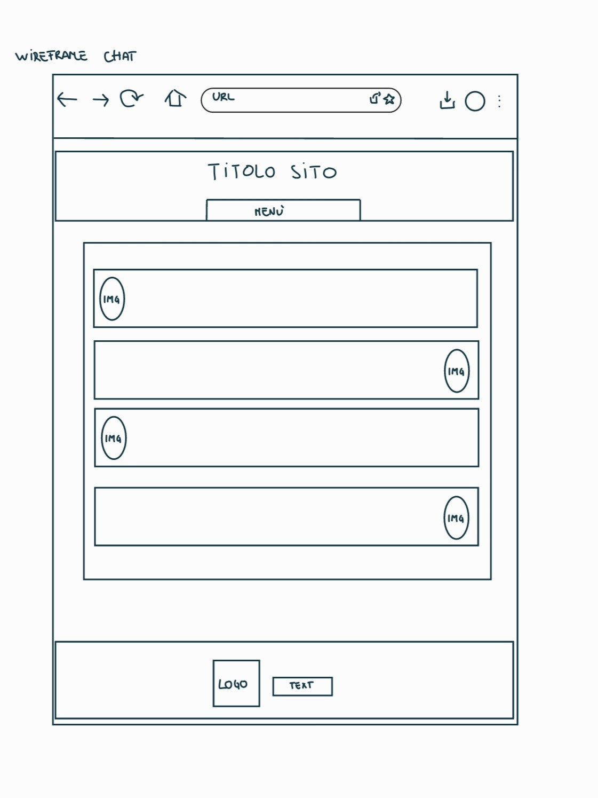
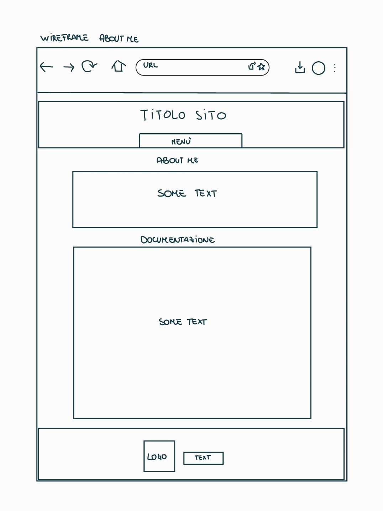
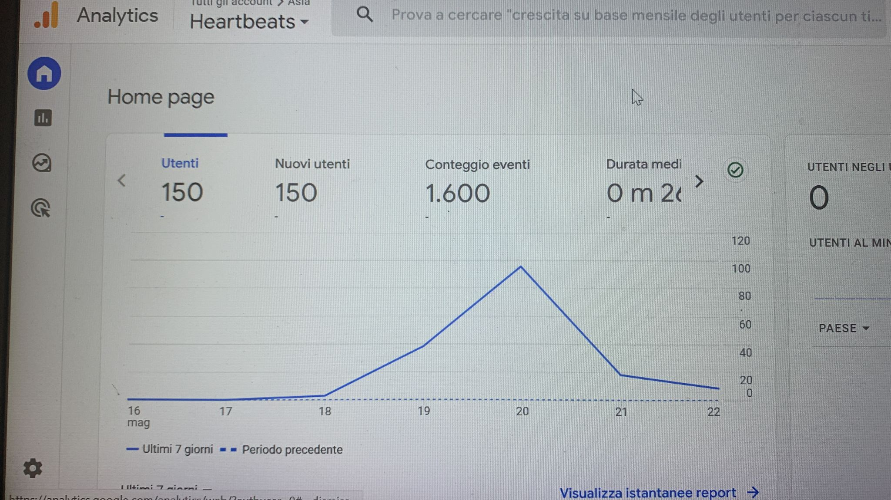
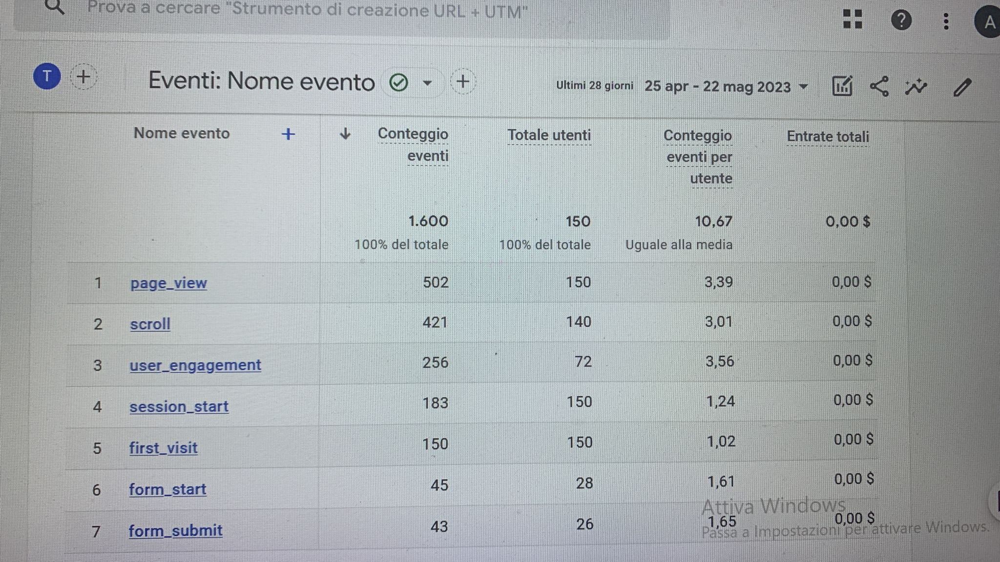
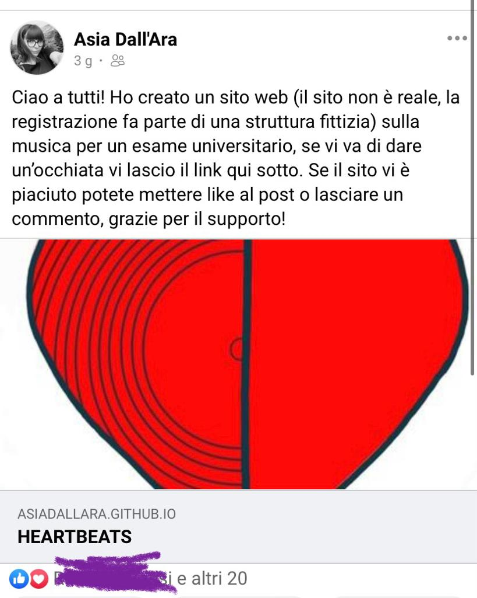
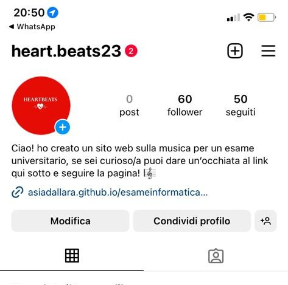

ABOUT ME
Grazie per esserti iscritto al sito. Mi chiamo Asia e frequento il terzo anno di corso in Filosofia presso l’università di Bologna. L’idea da cui nasce questo sito è quella di incontrare il proprio partner ideale attraverso gli stessi gusti musicali. Condividere la stessa musica può essere un bellissimo modo di iniziare una conoscenza, ed è un argomento stimolante se si vuole approfondire la personalità dell’altra persona. Grazie al corso di ‘’Informatica Umanistica’’ ho potuto mettermi alla prova con una tipologia di esame che non avevo mai sperimentato prima e che mi ha permesso di realizzare questo sito di incontri fittizi.
PROJECT MANAGEMENT PLAN
BENCHMARKING
- Obiettivi
- Target Utente
- Competitors
L’obiettivo di Heartbeats è quello socializzare con persone che hanno interessi musicali simili ai nostri e iniziare così una conversazione intorno a un argomento che ci farà capire qualcosa sul carattere dell’altro e sarà più facile entrare in sintonia con chi gode delle nostre stesse passioni. Così non si corre il rischio di invitare ad un concerto di archi un assiduo frequentatore di rave parties.
Questo sito è pensato principalmente per una fascia giovanile che va dai 18 ai 30 anni e che è solita navigare sul web, utilizzare spesso i social e imbattersi in siti innovativi che hanno lo scopo di favorire incontri con persone che hanno passioni in comune.
Tastebuds: sito che utilizza la musica come mezzo per connettere le persone fra di loro. La maggior parte delle persone iscritte ha fra i 25 e 35 anni, chi ha meno di 18 anni non può accedere all’iscrizione che è gratuita. La registrazione è rapida tramite Facebook. L’app mobile non è disponibile su Android. Molti membri si iscrivono perché sono alla ricerca di amici occasionali con i quali andare ai concerti, altri per uscire con qualcuno che condivide il tuo stesso gusto musicale.
Vinylly: dating app che collega al proprio profilo l’account spotify per associare persone con gli stessi interessi musicali. L’app consente di creare e condividere playlist. Lo scopo di Vinylly è quello di sviluppare attraverso la musica la dopanima, l’ossitocina e diminuire il cortisolo.
Tinder: app di incontri più famosa al mondo che ci propone una serie di partner che siano in linea con le nostre preferenze. Se siamo interessati al profilo di una persona basterà metterle like e se questa ricambia avverrà il match e si comincerà la conversazione. Su Tinder alcuni mettono qualche informazione su se stessi, ma il focus ricade sulle foto che vengono pubblicate sul proprio profilo e spesso si può rimanere delusi nel momento in cui tale immagine non corrisponde alla persona fisica che si incontra.
SRUTTURA E LAYOUT
- Architettura Del Sito
- Wireframe    
- Look And Feel
- Linguaggi
- Strumenti
- Background
- Obiettivi Comunicativi
- Target, Audience e Messaggio

Ho scelto ‘’Heartbeats’’ come nome del sito, giocando sui significati che collegano le singole parole, ossia il battito del cuore e i battiti della musica. La grafica del logo vuole rappresentare un giradischi a metà per unire la musica e l’amore. Il programma che è stato utilizzato per realizzarlo è Samsung Notes. Quando ho pensato allo stile e alla grafica del sito volevo qualcosa di semplice, pulito, ma che fosse d’impatto e che facesse intuire subito all’utente lo scopo per il quale era stato realizzato; dunque ho adottato il bianco come sfondo per la semplicità e la calma che trasmette e il rosso per richiamare l’attenzione all’amore che è il tema attorno a cui ruota il sito.
LINGUAGGI E STRUMENT
HTML e CSS
Bootstrap v5.3: sito per parti di codice HTML e CSS per la grafica ed elementi aggiuntivi;
W3School: sito per parti di codice HTML e CSS per la grafica ed elementi aggiuntivi;
HTML.it: sito per parti di codice HTML e CSS per la grafica ed elementi aggiuntivi;
Adobe Color: sito per la creazione della palette di colori;
Google Font: sito per la scelta del font;
Font Awensome: sito per l’uso di icone;
Samsung Notes: app per creazione del wireframe e del logo del sito;
Word: app per la creazione dell'architettura del sito;
Google Analytics: sito per il controllo e la valutazione dell’andamento del sito;
Github: sito per la pubblicazione del sito sul web.
COMMUNICATION STRATEGY
Il punto di forza di ‘’Heartbeats’, a differenza di altri siti di incontri come Tinder, è quello di far conoscere la propria anima gemella attraverso uno strumento, ossia quello musicale, che non fa dell’attrazione fisica la base dell’incontro fra gli utenti. Quando le persone scoprono le rispettive compatibilità e iniziano a chattare con loro, sono ignari dell’utente che scrive dall’altra parte dello schermo e il sito non ce l’ha proposto in base ad una compatibilità che rispecchia i nostri canoni estetici, ma in riferimento ai gusti musicali che noi abbiamo in comune con quella persona. Dunque, le conversazioni che si instaurano su questo sito nascono da premesse più interessanti e meno superficiali di una sequenza di foto che ci hanno incuriosito di quel ragazzo/a e che ci hanno spinto a mettere ‘’like’’al suo profilo.
Lo scopo di questo sito, attraverso un linguaggio semplice e diretto, è quello di promuovere incontri fra persone che condividono le stesse passioni musicali e magari organizzarsi per andare insieme a sentire le band del cuore. Heartbeats nasce anche come uno spazio di svago, in cui ci si vuole isolare dalla vita frenetica di tutti i giorni parlando con qualcuno che si rilassa ascoltando le tue stesse playlist.
Il sito si rivolge principalmente ad un pubblico giovanile di età compresa fra i 18 e i 30 anni. Heartbeats può essere promosso tramite social network come instagram, facebook. Un target secondario può essere quello compreso nella fascia di età compresa fra i 30-40 anni, che può essere raggiunto più facilmente attraverso il passaparola, la condivisione sui gruppi whatsapp. Una possibile barriera potrebbe essere il disinteresse nei confronti di un sito di incontri, anche se la musica è un argomento così universale e fa da sfondo in molte occasioni della nostra vita, che è difficile esserne indifferente.
PROMOZIONE
Il miglior modo di promuovere il sito è sicuramente attraverso i social media, in particolare attraverso le ‘’stories’’ di instagram; la condivisione dell’url del sito sui gruppi whatsapp; il passaparola fra amici e familiari.
RISULTATI
50 visite al sito web da utenti unici
 almeno 20 like di un post sul social Facebook
almeno 30 follower sulla pagina Instagram ufficiale del sito web
